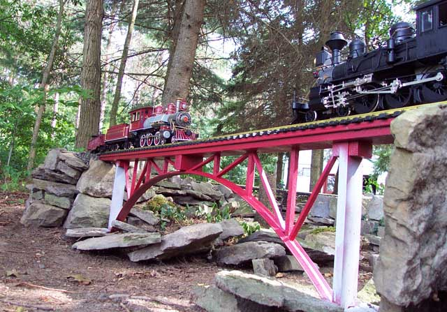

Page 3
2003 - Year 3
During the winter of
2002-2003, while construction of the mainline
ceased for the LONG 6 months of snow and ice that
season, many structures were built for the
railroad!
This page shows all
the buildings built that first winter.
(these photos dont show the buildings in
their intended place on the railroad, they were
just brought
out into the yard to be photographed!)
All the structures and bridges are
scratch built.
from scrap wood, plastic, metal,
whatever is at hand.
The engine house.
The coaling tower.
The yard office.

The water tower.

The sand tower.

The Stone Hedge Station!
the track side.
the other side.
All the structures laid out in their
approximate position.
all the buildings are going to be
together in the yard.
(except for the Station)
a track is going to be laid along a
trestle to the top of the coaling tower.
There are 8 or 9 bridges, (and as many
underpasses)
several viaducts, and 2 tunnels on the
line.
all curves are 8' diameter, and all
grades are 1% or less.
there are only 2 turnouts, for the small
yard.
it is impossible to trace the entire
line in your head while standing in one spot!
you have to physically walk along the
whole line to trace where all the tracks go.

To next page
|